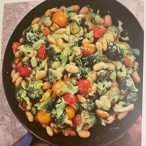

Bereidingstijd: 15 minuten, Aantal personen: 2-3, Vleesvervanger: lima bonen, Koolhydraten bron: -
Broccoli en bonen met knoflook

Ingredienten
Voor de bonen:
- 1 stronk broccoli. dikke stelen verwijderd
- 4 tenen knoflook, geperst of
- 2 blikken limabonen van 400 g
- 1 kleine courgette, geraspt
- 20 g kerstomaatjes (ca. 12)
- geraspte schil van ½ citroen
- zout en peper
- 1 el yoghurt (kokos of soja)
Voor de pesto:
- 40 g amandelen, geroosterd
- 2 tenen knoflook, geroosterd (in de airfryer voor als je haast hebt)
- 15 g verse basillicum
- sap van ½ citroen
- 6-10 el olijfolie (in een kleine blender is 6 genoeg, in een grotere blender heb je meer nodig,
- 4 el water
- 1 tl edelgistvlokken
Bereiding
- Doe alle ingredienten voor de pesto met wat zout en peper in de blender en maal ze glad. Als je een grote, minder krachtige blender gebruikt, heb je misschien meer water of olijfolie nodig om de pesto makkelijk te kunnen malen.
- Snijd de broccoli in kleine, hapklare stukjes - hoe kleiner hoe beter in dit recept.
- Blancheer de broccoli door de stukjes gewoon onder kokend water te zetten en ze 2-3 minuten te laten staan, tot ze zacht zijn maar nog wel wat bite hebben, en giet ze dan af.
- Verhit de knoflook met een flinke scheut olijfolie en wat zout op middelhoog vuur in een grote koekenpan. Bak 2 minuten en voeg dan de broccoli, limabonen en Kerstomaatjes toe. Roer de courgette, yognurt, citroenschil, pesto en wat peper erdoor.
Bron: Snel & Makkelijk - Ella Mills, Pagina: 109